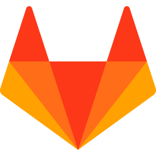
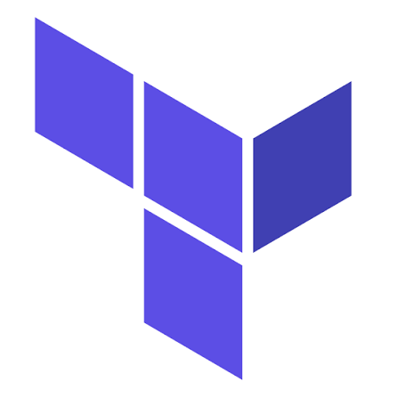

3. Giới thiệu về DevOps & CICD
/
Ma trận DevOps tools & CICD
Giới thiệu
Khi tìm hiểu về DevOps, bạn sẽ nhanh chóng bắt gặp những bức tranh “DevOps roadmap” hay “DevOps tools” với hàng trăm logo công cụ.
Câu hỏi đặt ra: bạn có cần biết thật nhiều tool để trở thành một DevOps Engineer? Và có một giải pháp CICD tối ưu cho mọi dự án không?
Ma trận DevOps tools
Các nhóm công cụ chính
- Collaborate / Plan: quản lý task và tài liệu — Jira, Confluence, Trello, Slack.
- Source code (SCM/VCS): Git, Github, Gitlab, Bitbucket.
- CI / Build: Jenkins, Github Actions, Gitlab CI, AWS CodeBuild; build tool như Maven, Gradle, npm, Docker.
- Test: JUnit, Selenium, JMeter, pytest, SonarQube (code quality).
- Deploy & Config Management: AWS CodeDeploy, Ansible, Chef, Terraform (IaC), Helm, ArgoCD.
- Run & Monitor: AWS, Kubernetes / EKS; CloudWatch, Prometheus, Grafana, ELK, Datadog.
Mô hình kiến trúc: CICD concept độc lập với công cụ
Mỗi bước trong CICD là một “ô trống” có thể lắp bằng nhiều công cụ khác nhau. Không có quy định kiểu “tool A bắt buộc phải đi với tool B”.
flowchart LR
subgraph S1["📂 Source"]
direction TB
G1["

Github"]
G2["🦊 Gitlab"]
G3["🪣 Bitbucket"]
end
subgraph S2["🔨 Build & CI"]
direction TB
B1["

Jenkins"]
B2["

GitlabCI"]
B3[" CodeBuild"]
B4["
Github Actions"]
end
subgraph S3["📦 Artifact"]
direction TB
A1["

ECR"]
A2["

S3"]
A3[" Docker Hub"]
end
subgraph S4["🚀 Deploy"]
direction TB
D1[" CodeDeploy"]
D2["

Terraform"]
D3["🐙 ArgoCD / Helm"]
end
subgraph S5["☁️ Run & Monitor"]
direction TB
R1[" EC2 / ECS"]
R2[" EKS"]
R3[" CloudWatch · Grafana"]
end
S1 --> S2 --> S3 --> S4 --> S5
Cùng một khái niệm CICD, mỗi dự án có thể chọn một tổ hợp công cụ khác nhau ở từng bước.
Bạn có cần biết tất cả các tool?
Không! Bạn không cần phải biết sử dụng tất cả mọi tool để trở thành một DevOps Engineer.
Nhắc lại: DevOps là một nét văn hoá, là triết lý — không phải tools hay công nghệ!
- Việc lựa chọn tool nào cho từng bước của CICD hoàn toàn dựa vào kinh nghiệm của đội dự án và các yếu tố khác như phí license, hạ tầng sẵn có, yêu cầu của khách hàng.
- Các tool cùng nhóm có cách hoạt động tương tự nhau. Nắm vững khái niệm và thành thạo một tool đại diện thì việc chuyển sang tool khác chỉ mất vài ngày.
- “Vô chiêu thắng hữu chiêu” — DevOps Engineer giỏi không nhất thiết là người biết nhiều tools, mà là người hiểu vấn đề và chọn đúng giải pháp.
Có giải pháp CICD tối ưu cho mọi dự án?
CICD là “may đo” (tailor-made). Sẽ không có one solution for all problems.
Việc áp dụng bao nhiêu quy trình, công cụ, phương pháp đơn giản hay phức tạp phụ thuộc hoàn toàn vào yêu cầu của project,
thời gian, ngân sách, kinh nghiệm của team... Một side project nhỏ không cần microservices, message queue,
multi-stage Docker build và pipeline 10 bước — đừng “rắc muối” mọi công nghệ hot vào dự án chỉ vì chúng nghe hay 😄.
Trade-off: pipeline đơn giản vs phức tạp
| Tiêu chí | Pipeline đơn giản | Pipeline đầy đủ, phức tạp |
|---|
| Ví dụ | Push code → build → deploy lên 1 server | Build → unit test → code scan → security scan → deploy Dev → integration test → Staging → approval → Prod (blue/green) |
| Thời gian xây dựng | Vài giờ | Vài tuần |
| Chi phí vận hành | Thấp | Cao (nhiều tool, nhiều môi trường, license) |
| Độ an toàn khi release | Thấp hơn | Cao |
| Phù hợp | PoC, side project, team nhỏ | Hệ thống lớn, nhiều team, yêu cầu tuân thủ (compliance) |
Use Cases
Dự án dùng toàn bộ dịch vụ AWS
Chọn CodePipeline + CodeBuild + CodeDeploy để tích hợp sẵn với IAM, không cần quản lý server CI riêng.
Doanh nghiệp đã có Jenkins
Tận dụng Jenkins và kinh nghiệm sẵn có của team thay vì chuyển đổi, chỉ bổ sung plugin để deploy lên AWS.
Open-source project trên Github
Dùng Github Actions: miễn phí cho public repo, cấu hình bằng file YAML ngay trong repository.
Thông tin bổ sung
Trong khoá học này, bạn sẽ thực hành CICD với ba bộ công cụ khác nhau — AWS CodePipeline, Jenkins và Github Actions — để thấy rõ cùng một khái niệm CICD có thể hiện thực hoá bằng nhiều cách.